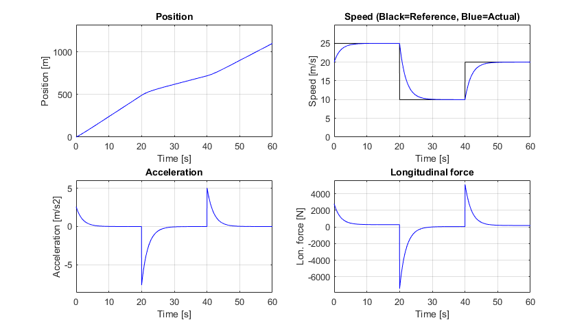

Cruise control - Speed reference tracking
Simulation and animation of a vehicle with cruise control and varying speed reference.
Watch animation on YouTube: https://youtu.be/FsIj-VvWe4Y
Contents
clear ; close all ; clc import VehicleDynamicsLongitudinal.*
Vehicle model
% Choosing vehicle VehicleModel = VehicleModelNonlinear(); % Changing speed reference (function below) VehicleModel.v_ref = @speed_reference_template;
Simulation time span
tf = 60; % Final time [s] fR = 30; % Frame rate [fps] dt = 1/fR; % Time resolution [s] TSPAN = linspace(0,tf,tf*fR); % Time [s]
Simulation object
To define a simulation object (simulator) the arguments must be the vehicle object and the time span.
simulator = Simulator(VehicleModel, TSPAN);
Run simulation
To simulate the system we run the Simulate method of the simulation object.
simulator.Simulate();
Results
g = Graphics(simulator);
g.Plot_Signals();
% g.Animation(); % (uncomment to run the animation)
 Auxiliary function
function V_ref = speed_reference_template(t) if t < 20 V_ref = 25; elseif t < 40 V_ref = 10; else V_ref = 20; end end